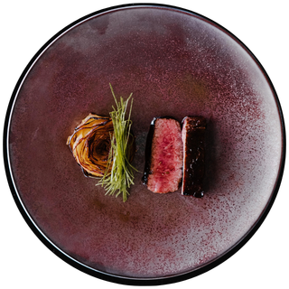

About
KANA finds is your go-to guide for eating out across the five boroughs of New York. From neighborhood bakeries to late-night pizza spots, find a place you’ll love and walk in knowing what to expect.
-
Search by name
Type part of a restaurant's name to find it fast.
-
Filter the list
Narrow results by borough, cuisine, grade, or maximum score.
-
Add a restaurant
Have a place in mind? Add it with its borough, cuisine, and grade.
-
Edit or delete your own
Change or remove the restaurants you added from this browser.
